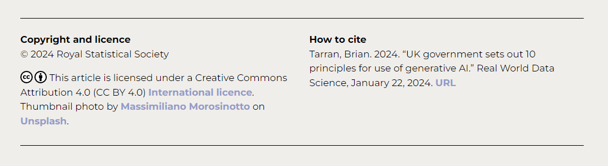

Content
The website realworlddatascience.net (“the website”) and the “Real World Data Science” and “RWDS” brands and logos are copyright © Royal Statistical Society.
Copyright and licence terms for published articles and any associated videos, images, or other material can be found at the end of each article page, e.g.:

We make every reasonable effort to locate, contact and acknowledge copyright owners and wish to be informed by any copyright owners who are not properly identified and acknowledged so that we may make any necessary corrections.
Where licence terms for individual articles, videos, images and other published content permit republication, you may do so in accordance with the stated terms of the respective licence(s).
You are not permitted to republish the website in its entirety.